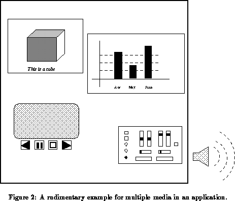

Previous: Media Objects
Up: Toolkit Objects
Previous Page: Media Objects
Next Page: Imaging.
Previous: Media Objects
Up: Toolkit Objects
Previous Page: Media Objects
Next Page: Imaging.
It is of course possible to build very spectacular programs that only rely on MADE media objects, using complex and possibly animated 2D and 3D graphics, running a video on the screen and playing audio. However, the shortcomings of such an approach are very soon visible if more complicated application programs have to be devised and implemented on this basis. As the very rudimentary example on Figure 2 already shows: interactive behaviour assigned to graphics objects have to be combined to control video output; visual representations for audio control have to be defined and implemented; 2D and 3D objects have to be combined in one picture, etc.

The basic media objects become really usable if they can be combined in variety of ways. Combination of media objects (and MADE objects in general) within an application has received a particular emphasis in the specification of the MADE project in order to enhance the usability of the tools. Five major areas of combination have been identified, and we shall return to each of them in some detail. The five areas of combination are: imaging, structuring, synchronization, interaction, and constraint management.